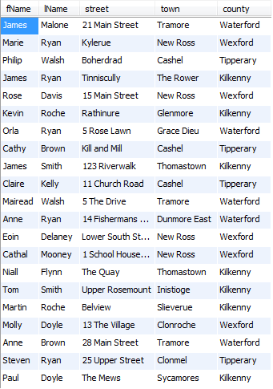
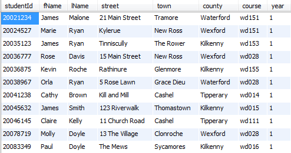
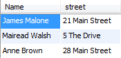

Objectives
In this lab we will learn about the basics of SQL and are introduced to the SELECT statement
- Understand what SQL is
- Understand a database table is
- Describe a table structure
- Select statement syntax
- Retrieve all records in a table
What is SQL?
SQL (sometimes pronounced SEQUEL) stands for Structured Query Language. SQL is used to communicate with a database. According to ANSI (American National Standards Institute), it is the standard language for relational database management systems. SQL statements are used to perform tasks such as update data on a database, or retrieve data from a database. Some common relational database management systems that use SQL are: Oracle, Sybase, Microsoft SQL Server, Access, Ingres, etc. Although most database systems use SQL, most of them also have their own additional proprietary extensions that are usually only used on their system. However, the standard SQL commands such as "Select", "Insert", "Update", "Delete", "Create", and "Drop" can be used to accomplish almost everything that one needs to do with a database.
Table Basics
A relational database system contains one or more objects called tables. The data or information for the database are stored in these tables. Tables are uniquely identified by their name and are comprised of columns and rows. Columns contain the column name, data type, and any other attributes for the column. Rows contain the records or data for the columns. Here is a sample table called "weather". The values city, state, high, and low are the columns. The rows contain the data for this table:
Our example - Library system
We have built a library database with the following tables: book, bookcopy, student, loan, author and authorship.
The tables are populated and we will use this data in our queries. The schema is stored in library_script.sql.
- Open MySQL Workbench and log in using password root.
To run the script:
- Under the File menu, choose Run SQL Script ….
- When the dialog box opens, select library_script.sql.
- Click the button Open and on the next dialog box, click Run.
- When the Operation has run successfully, click Close.
Alternatively:
- Choose Open SQL Script ….
- When the dialog box opens, select library_script.sql.
- Click the button Open. This will open the script in a new tab.
- To execute the script, choose the third option on the window.
Describing Data
Before you work with a database you must specify the database (by name) that you want to work with.
Enter the following command:
USE LIBRARY;We have already set up tables for our library system. If you want to see their structure, use:
DESCRIBE 'tablename';Or
DESC 'tablename';Example
DESC book;This will return a description of the book table including field names and their corresponding data types.
To Do:
Now, describe the other tables.
The SELECT statement
The select statement is used to query the database and retrieve selected data that match the criteria that you specify. The data returned is stored in a result table, called the result-set. Here is the format of a simple select statement:
SELECT [DISTINCT|ALL]{*|[columnExpression [AS newName]][,...]}
FROM Tablename [alias]
[JOIN Tablename ON ...]
[WHERE condition]
[GROUP BY columnlist][HAVING condition]
[ORDER BY columnList];Note: [] = optional
- columnExpression represents a column name or an expression.
- TableName is the name of an existing database table or view that you have access to, and alias is an optional abbreviation for TableName.
- The sequence of processing in a SELECCT statement is:
| SELECT | specifies which columns are to appear in the output |
| FROM | specifies the table to be used |
| JOIN | specifies the table(s) to be joined with the table in the FROM |
| WHERE | filters the rows subject to some condition(s) |
| GROUP BY | forms groups of rows with the same column name |
| HAVING | filters the groups subject to some condition(s) |
| ORDER BY | specifies the order of the output |
Simple Select examples
As we know, the select statement is used to query the database and retrieve selected data that match the criteria that you specify.
Conditional selections used in the where clause:
| = | Equal |
| > | Greater than |
| < | Less than |
| >= | Greater than or equal |
| <= | Less than or equal |
| <> | Not equal |
| != | Not equal |
Examples
SELECT * FROM book;This will return all records with all columns included.
SELECT title, publisher FROM book;This will return a subset of columns. This query will return all records with just 2 columns (title and publisher) included.
SELECT title FROM book WHERE publisher = 'Addison Wesley';This will return a subset of records only. Records will only be selected if the publisher value is equal to Addison Wesley. When these records are selected (in memory) the column title is then returned.
Practice: Try out all the examples yourself
Enter the following sample select statements, one at a time to see what is returned:
SELECT * FROM student;
SELECT fname, lname FROM student;
SELECT * FROM student WHERE county = 'Waterford';Exercises
Display the full name and full address for every student that's in the table.

Display the first name, last name, and county for everyone that's not from Waterford.
Display all columns for every student that is in first year.

More on Select
To change the column heading returned, we can use AS:
SELECT fname AS 'First Name', lname AS 'Last Name' FROM student;OR
SELECT fname 'First Name', lname 'Last Name' FROM student;To concatenate (join) two (or more) columns together use CONCAT as follows:
SELECT concat(fname, ' ', lname) AS Name FROM Student;The result of concatenating two character strings is another character string. With the concat feature, we are usually joining fieldnames and
separation characters (such as a hyphen (-) or a colon (:) or a space ( )). Use a comma to separate each element.
Distinct
Enter the following:
SELECT publisher FROM book;This returns the publisher for each book record, so you will see values repeated. But if we only want to know the list of publishers that we are using at any one time, we do not want to see for example Addison Wesley more than once.
To eliminate duplicates, use the keyword DISTINCT. Now enter the following:
SELECT DISTINCT publisher FROM book;Notice the difference in the number of returned values.
Exercises
Display the title of all books that are categorised as Computing. Output the result as Computing Titles.

Display the counties that the students come from. Output the result as Student County. List each county only once.

Display the student id, first name and last name for all students that are on course wd155. Concatenate first name and last name together and output the value as Student Name.
Return the first name, last name and Street for all Students from Tramore. Output the student name concatenated and labelled as Name.

Retrieve the titles of all books published by Sitepoint. Label the returned titles as 'Sitepoint books'.